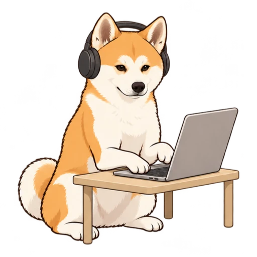
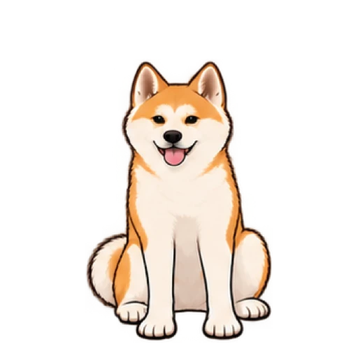
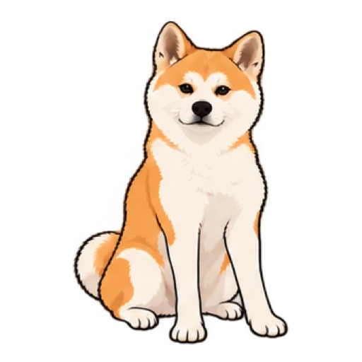
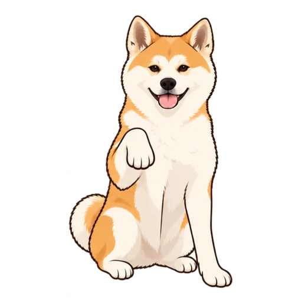
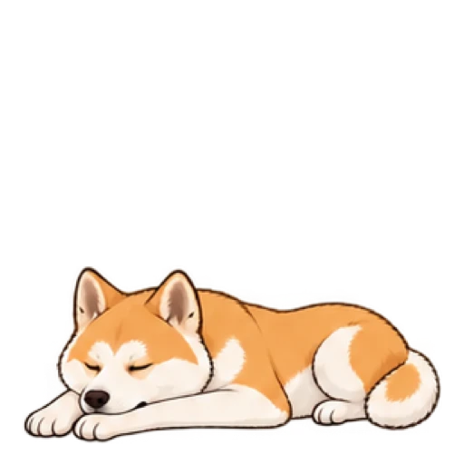
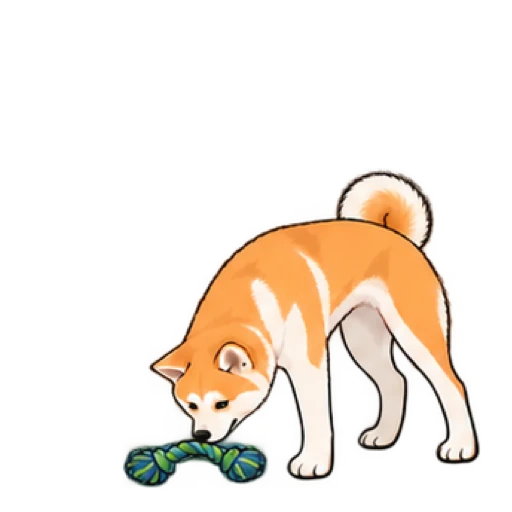

Room to keep running.
The goal was around-the-clock availability, with less worry about token usage during everyday tasks.
Melo · Independent side project · Agent experience
Our Japanese Akita, Melo, became the inspiration for a local AI agent’s avatar. I’m designing a character that communicates what the agent is doing—and brings a little of the companionship of a digital pet.

Working on itDesign outcome
Five agent states. Six expressive behaviors. A consistent character, animated and still poses, and two ways to spend idle time: quietly resting or playfully passing the time.
An avatar asset system and interaction preview. Integration into the local agent and user validation are next steps.
01 / See it in action
Choose a behavior to explore the avatar. Starting up, thinking, working, and asking for input each have their own cue. Resting and playing are two expressions of the same idle state: the agent is open, with no task underway.
The agent is carrying out a task. Headphones and typing make active work distinct from thinking or waiting.
02 / A personal starting point
My boyfriend wanted to build a local agent, inspired by products like Dot and Muse. He asked me to design its avatar. We immediately thought of our dog, Melo, a Japanese Akita—a familiar personality to bring into an everyday tool.
The starting point was personal: an agent that could stay with you over time.
The goal was around-the-clock availability, with less worry about token usage during everyday tasks.
Running locally was motivated by wanting greater control over personal data and how the agent handles it.
A long-term assistant that could become more personal as it learns someone’s preferences and routines.
These are goals for the local-agent concept. My contribution focuses on its avatar: translating software activity into a character people can recognize, understand, and enjoy having around.
03 / Establishing the visual identity
I began in Codex and Claude Code with the static character design. Before adding movement, I explored illustration styles and compared how well each one captured Melo’s identity. We chose the illustrated direction as the foundation for the avatar.
Earlier proportions felt too round. I refined the body and front legs while retaining the orange-and-cream markings, upright ears, and curled tail. Those features became the visual anchors to preserve across every action.
AI tools supported artwork and prototyping; I directed the design. My work was comparing alternatives, selecting the visual direction, and iterating on consistency and behavior.
04 / Connecting character to interaction
Once the character was established, I mapped its behavior to five functional states. Each pose starts with a specific moment in the agent experience, so the animation has a job to do.





The design choice / Two ways to be idle
An assistant when you need one. A digital pet in between. I created both resting and playing behaviors for idle time. Quiet breathing keeps Melo present; a toy adds a playful moment. Neither implies that a task is running—the difference is in the companionship.
Timing
Starting up plays once and settles into a seated pose. The other behaviors loop. I explored longer sequences, then returned working and attention to earlier versions to preserve their original rhythm.
Attention
A gentle paw tap signals a question or request for approval. The handoff calls for this cue to interrupt other behaviors, so an idle animation never delays a request for input.
05 / What exists & where it could go
Today, Melo is an avatar asset system and an interactive preview: six animated behaviors, matching still poses, a consistent canvas, and playback rules. Integration into the local agent is the next implementation step.
Ready for handoff
Consistent alignment keeps Melo grounded when poses change. Still poses preserve the state cue when motion is turned off, and explicit labels keep the meaning clear.
I want to explore how this could become a product for more people: bring a pet, a favorite character, or another meaningful reference, and turn it into an avatar for a personal agent.
Start with a pet, character, or other visual inspiration that feels personal.
Explore illustration options and choose an identity to carry across behaviors.
Connect recognizable actions to the same agent states, with room for individual expression.
Can people distinguish thinking from working? Do they understand that both resting and playing mean idle? Does the request for input feel noticeable without becoming distracting? I would test these cues at small sizes and during real tasks, then explore whether the same approach works across different characters.
Ongoing side project. I led avatar concept, visual direction, behavior mapping, and iteration using Codex and Claude Code. Local-agent integration, broader customization, and usability validation remain next steps.
A good conversation is a good start
I’m exploring UX research opportunities, and related roles in product insights, customer experience, and strategy.